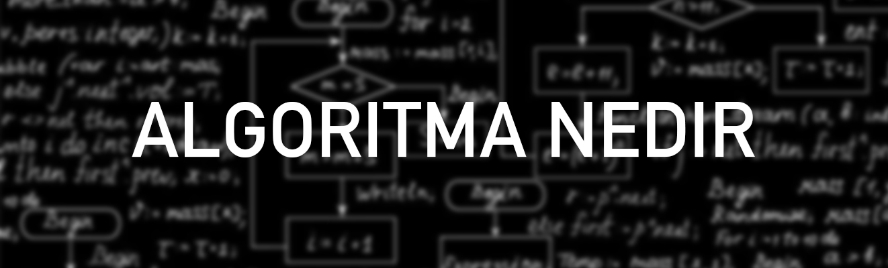

Algoritma Nedir
Algoritma, belirli bir problemi çözmek veya belirli bir amaca ulaşmak için çözüm yolunun adım adım tasarlanmasıdır. Algoritmalar sadece bilgisayar bilimlerinde değil hayatın her alanında kullanılır. Örneğin bir yemek yaparken, o yemeğin tarifindeki adımlar aslında bir algoritmadır
Örneğin sınav esnasında kalemimizin ucunun bitmesi, internetten aldığımız ayakkabının küçük gelmesi, okula geç kalmamız gibi durumlar günlük hayatta karşılaşabileceğimiz problemlere birer örnektir. Bir problemi tanımlama, nedenini açıklama, çözümü için alternatif yolları belirleme ve bu yollar arasından en uygun olanı uygulama süreçlerinin tamamı “problem çözme” olarak adlandırılır. Algoritma, bir problemi çözmek için gerekli yolun basit, net ve belirli bir sıraya göre tasarlanmış hâlidir.